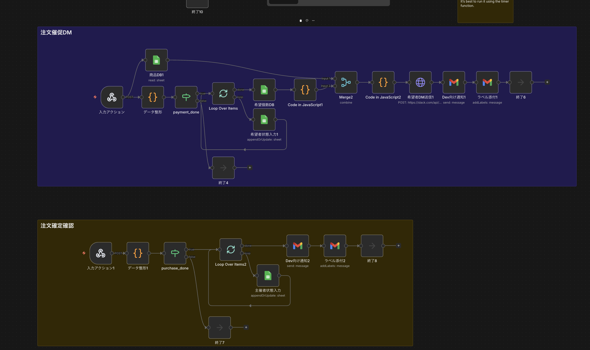
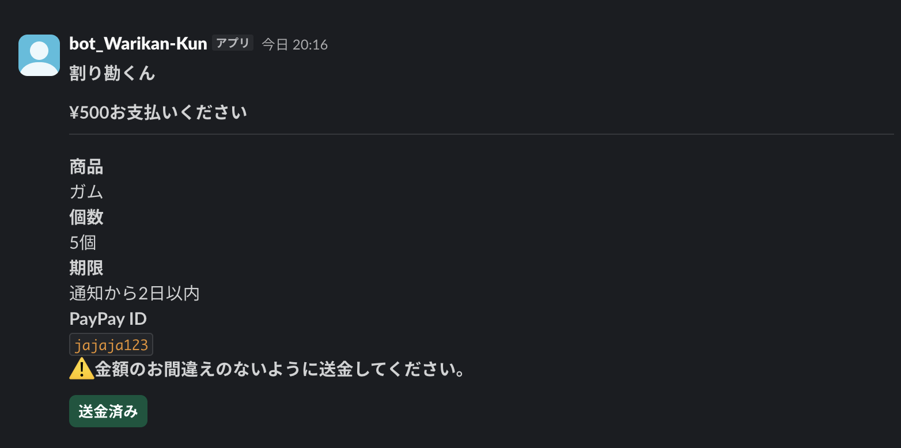
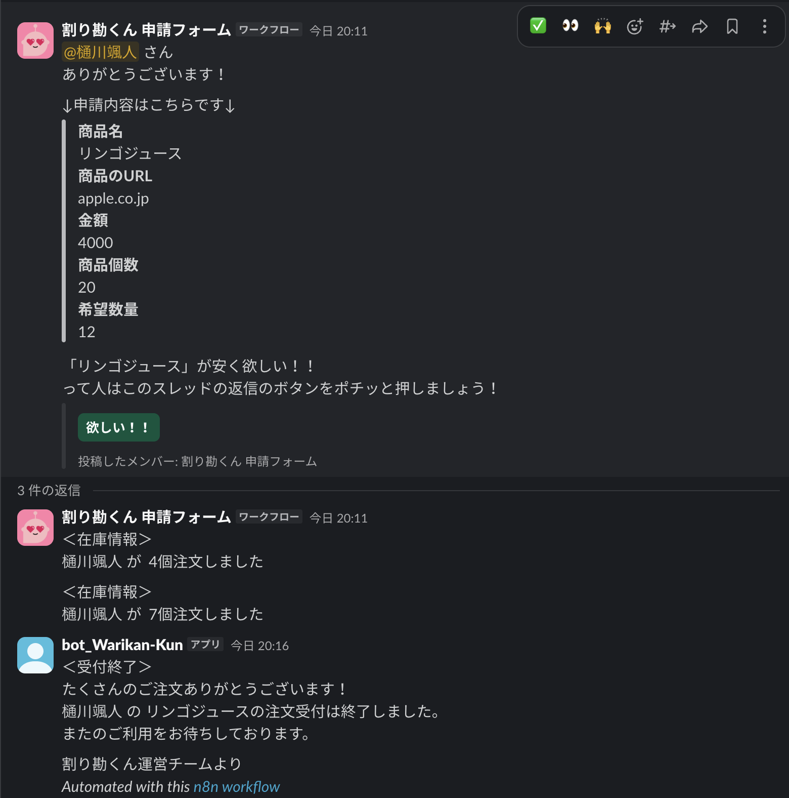

課題提起
- 希望者の個数集計を手作業で行う必要がある
- 各希望者への送金依頼DMを個別に送るのが面倒
- 誰が払ったかを Slack スレッドだけで管理しづらい
- 全員の支払い完了後に主催者へ購入催促するのが煩雑
共同購入で発生する「希望数の集計」「送金依頼DM」「入金確認」「購入催促」を、n8n・Slack・Google Sheets・Webhook を組み合わせて自動化する。
共同購入で発生する「希望数の集計」「送金依頼DM」「入金確認」「購入催促」を、n8n・Slack・Google Sheets・Webhook を組み合わせて自動化する。
共同購入では、主催者が希望者ごとの個数と支払い状況を追跡し続ける必要があり、少人数でも運用コストが高くなります。
主催者と参加者の手作業を減らすことを優先し、UIを増やさず Slack 上で完結する構成にした。データ処理と状態管理は n8n と Google Sheets が担当する。
既存の運用フローを変えずに、送金依頼・支払い確認・購入催促を自動化し、確認作業の回数を減らす。
処理の流れごとに整理した構成。
共同購入の進行をステータスで管理する構成にしている。
Slack の入力内容を受け取り、「管理ID」 と希望者データを生成する。
各希望者に対して DM 用の1レコードへ分解し、「希望者管理ID」 を付与する。
送金依頼DMを送り、希望者DBの「ステータス」を「dm sent」に更新する。
Slack の Block Actions から Webhook に payload が届き、該当希望者の「ステータス」を「payment done」に変更する。
同じ「管理ID」の希望者が全員「payment done」になったら、主催者へ購入依頼DMを送る。
Google Sheets の行番号や Loop ノードの処理順に依存すると、n8n ではデータ重複や誤更新が起きやすい。 そのため、識別子とステータスで管理する方針に切り替えた。
「管理ID」は商品案件単位、「希望者管理ID」は「管理ID + ユーザーID」として設計した。
行番号ではなく識別子で一致させることで、並び順が変わっても更新対象を見失わない。
「ステータス」を参照することで、DM 送信済みや購入催促済みの案件を再実行時に除外できる。
バックグラウンド処理の核になっている代表コードを抜粋して示す。
商品単位のデータから、DM送信用の希望者レコードへ展開する。 この段階で「希望者管理ID」も持たせる。
const items = $input.all();
const results = [];
for (const item of items) {
const data = item.json;
const product = data["商品"] ?? {};
const applicants = data["希望者一覧"] ?? [];
for (const person of applicants) {
const userId = person["ユーザーID"];
if (!userId) continue;
results.push({
json: {
管理ID: data["管理ID"],
希望者管理ID: `${data["管理ID"]}${userId}`,
宛先ユーザーID: userId,
商品名: product["商品名"] ?? null,
希望者支払額: Number(person["支払額"] ?? 0),
}
});
}
}
return results;Slack のボタン押下から「希望者管理ID」を取り出し、 Sheets 更新用のデータへ変換する。
const raw = $json.body?.payload ?? $json.payload;
const payload = typeof raw === "string" ? JSON.parse(raw) : raw;
const action = payload.actions?.[0] ?? {};
return [
{
json: {
actionId: action.action_id ?? null,
希望者管理ID: action.value ?? null,
送金報告ユーザーID: payload.user?.id ?? null,
actionTs: action.action_ts ?? null
}
}
];実際の利用画面とワークフロー画面を示す。Slack 上の利用体験と、裏側の処理の両方を確認できる。

上段では希望者の支払い完了を受けて注文催促DMを送信し、下段では主催者の注文完了操作を受けて状態を更新する。 申請後の処理が複数のステップに分かれていることが分かる。

商品名、個数、期限、PayPay ID をまとめて表示し、利用者は内容を確認した上で「送金済み」ボタンを押せる。 支払い確認を Slack 上で完結させるための画面である。

申請内容の表示、在庫情報の返信、受付終了後の通知までが Slack スレッド上で確認できる。 ユーザーは別画面に移動せずに状況を把握できる。